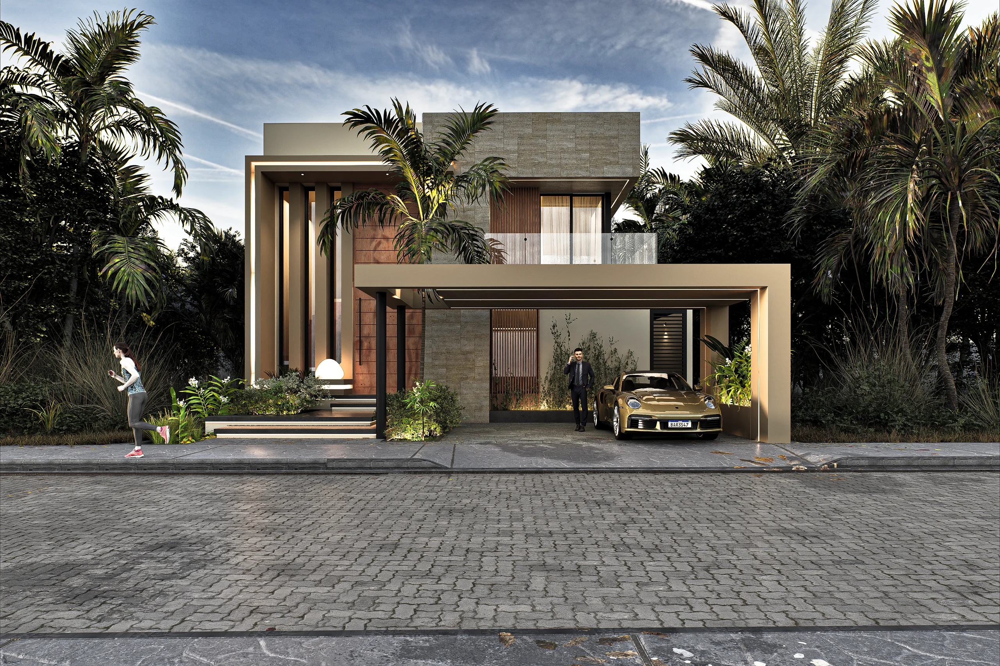
FEATURED / 01
EST. CANCÚN, MÉXICO VISUALIZACIÓN ARQUITECTÓNICA & CGI
ESTUDIO BOUTIQUE DE VISUALIZACIÓN 3D
Lo extraordinario
comienza con
una visión.
Convertimos conceptos arquitectónicos en experiencias visuales cinematográficas que anticipan el futuro de cada espacio.
Explorar portafolio
DESLIZA PARA DESCUBRIR
01 / NUESTRA FILOSOFÍA
ARQUITECTURA · EMOCIÓN · ATMÓSFERA
MÁS ALLÁ DE LA FORMA
Hay espacios que
Hay espacios que
se construyen.
Y otros que
se sienten.
En KAM DESIGN unimos precisión arquitectónica, iluminación escénica y arte digital para hacer tangible lo que todavía es un boceto. Cada material, cada sombra y cada encuadre cuenta una historia: la de tu próximo gran desarrollo.
Conocer nuestra expertise
EL DISEÑO NO SOLO SE VE.
SE VIVE.
SE VIVE.
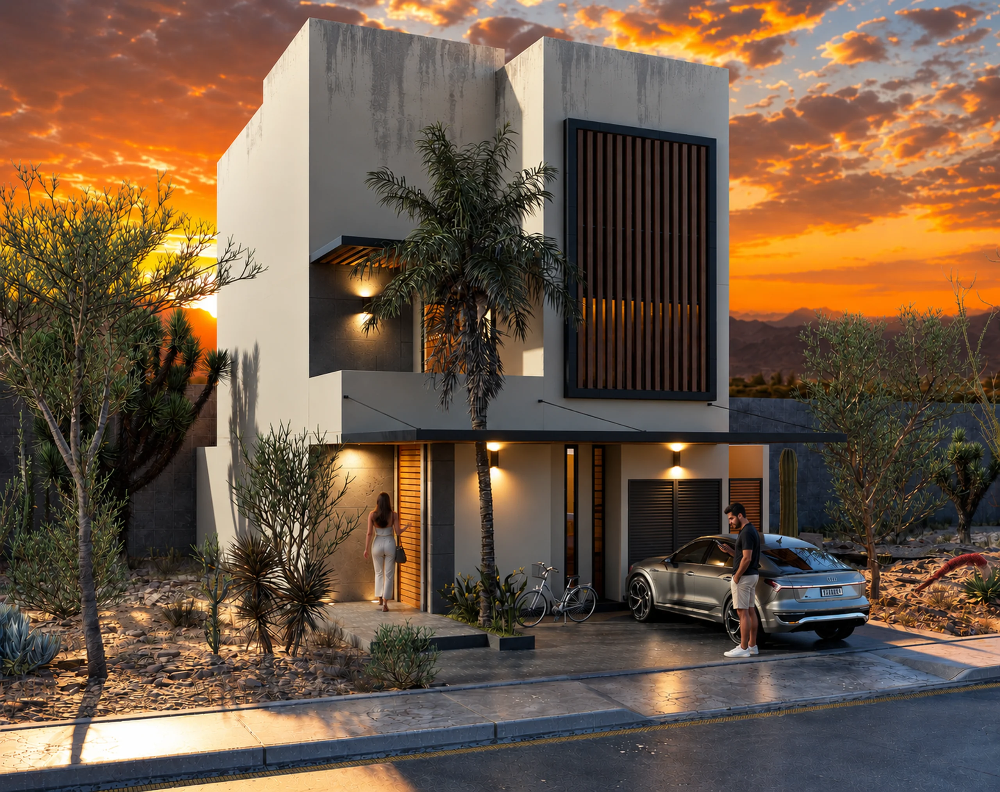
COBRAN ATMÓSFERA. ↗
ARQUITECTURA QUE INSPIRA.
IMAGINACIÓN · PRECISIÓN · ATMÓSFERA
EST. CANCÚN, MÉXICO
02 / PORTAFOLIO SELECTO
Una galería concebida
Una galería concebida
para ser contemplada.
Una colección curada de visualizaciones residenciales, volumetrías de lujo y diseño de interiores realizadas con precisión geométrica y dirección de arte cinematográfica.
Solicitar portafolio en PDF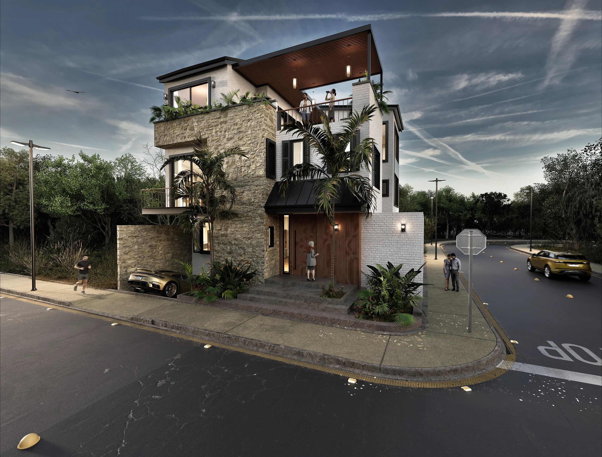
RESIDENCIAL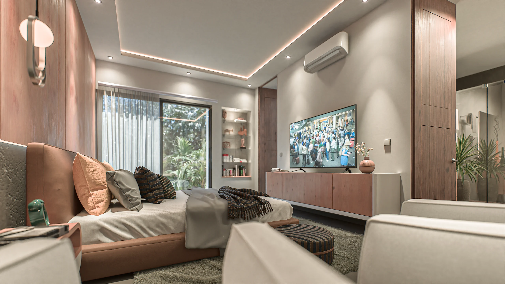
INTERIORES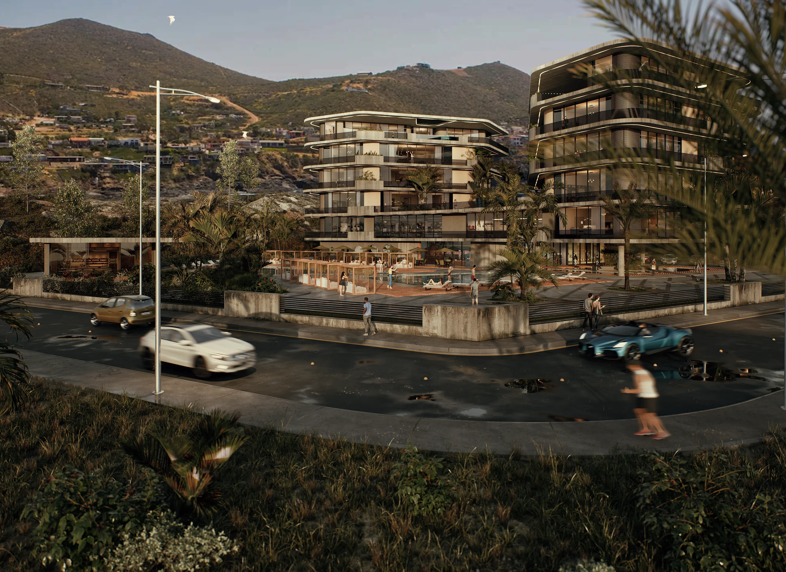
DESARROLLO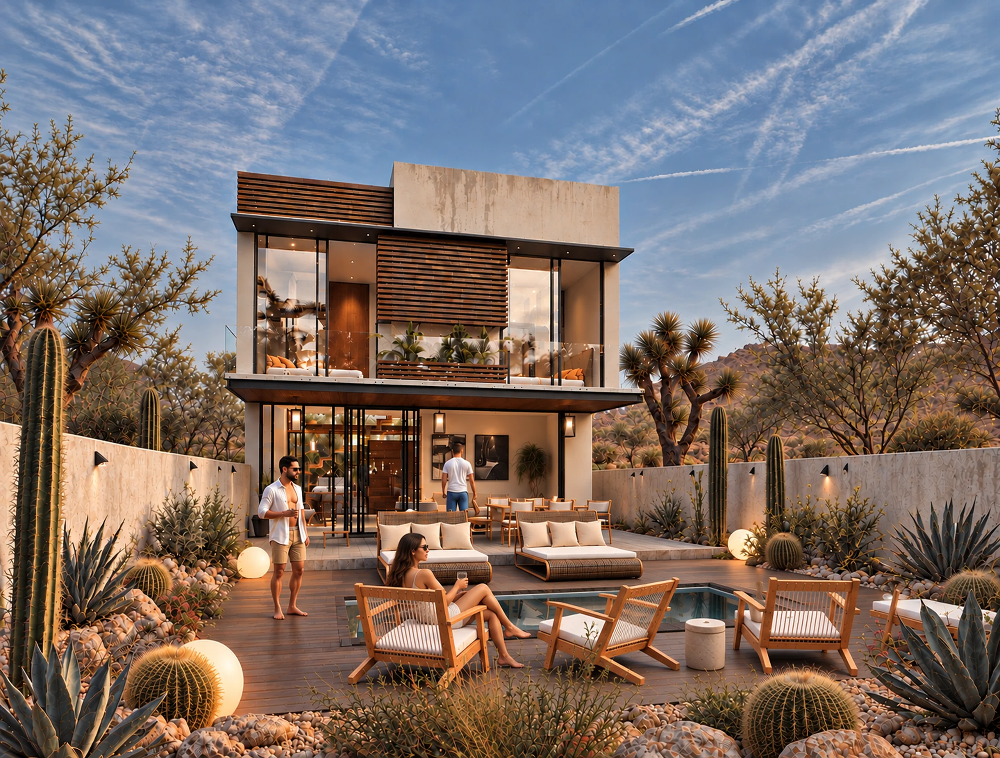
ARQUITECTURA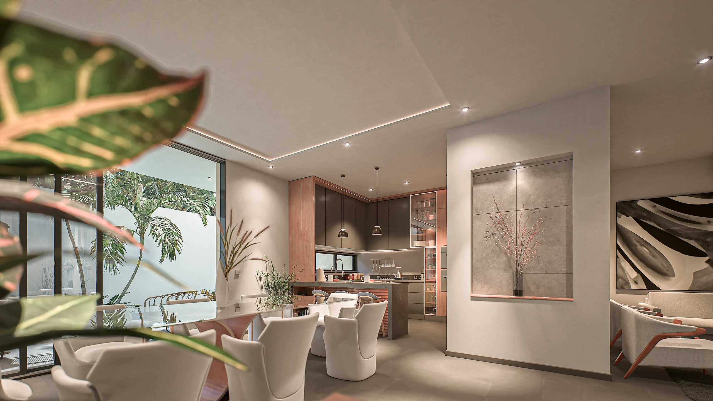
COCINA GOURMET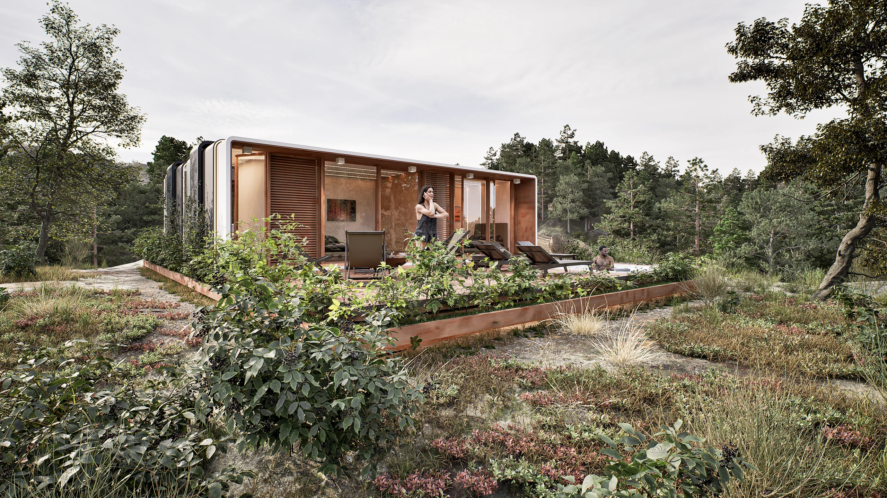
MODULAR 3D
LA VISIÓN KAM DESIGN
No solo mostramos edificios.
No solo mostramos edificios.
Revelamos posibilidades.
NÚCLEO KAM · DIRECCIÓN & PRODUCCIÓN
El equipo que convierte
El equipo que convierte
visión en presencia.
Un estudio multidisciplinario donde arquitectura, visualización fotorrealista, estrategia digital y rigor técnico trabajan en estrecha sinergia para elevar cada proyecto a su máxima expresión comercial.
Karla Camacho
Dirección Creativa · Fundadora
Lidera la visión conceptual, la atmósfera visual y la narrativa estética de cada entrega del estudio.
Andrés Romero
Arquitectura · Diseño
Traduce anteproyectos y programas espaciales en soluciones volumétricas sólidas y proporcionadas.
Lucía Vega
Visualización 3D · Socia
Especialista en simulación de luz, materiales hiperrealistas y encuadres con intención cinematográfica.
Carlos Medina
Coordinación · Producción
Supervisa cronogramas, control de calidad y precisión técnica en los modelos ejecutivos de entrega.
Sofía Gómez
Estrategia · Cliente
Acompaña la relación con desarrolladores inmobiliarios y asegura que cada render responda a metas comerciales.
03 / NUESTRA EXPERTISE
Servicios diseñados
Servicios diseñados
con mirada editorial.
Combinamos técnicas avanzadas de computación gráfica (CGI) con sensibilidad artística para crear herramientas comerciales persuasivas e inolvidables.
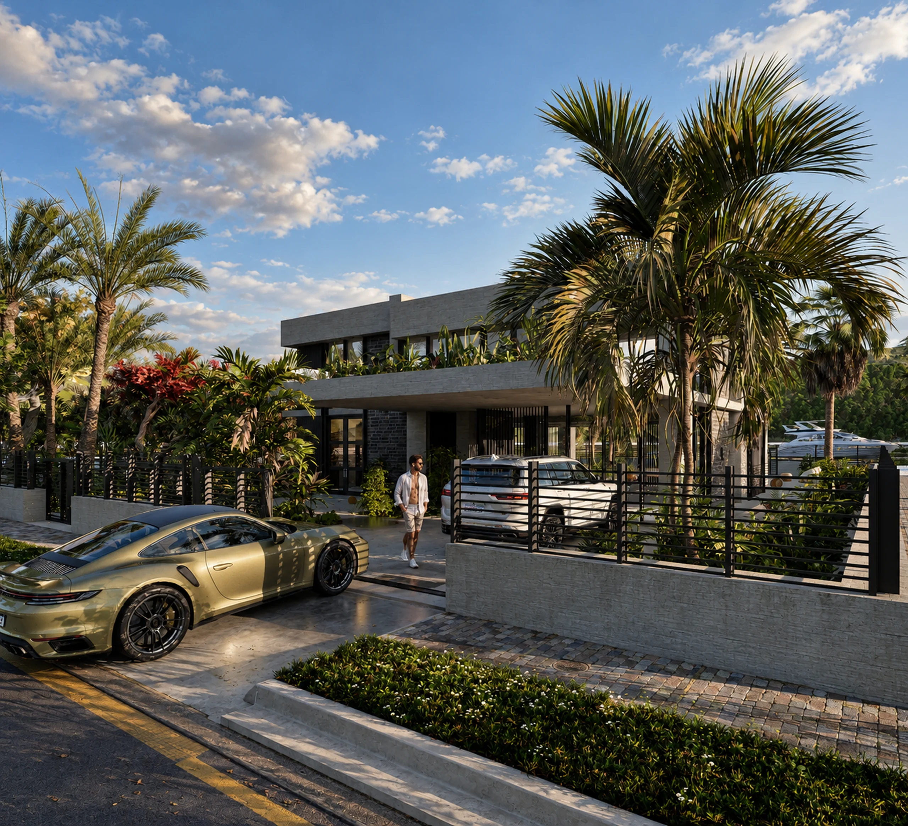
SIGNATURE SERVICE / 01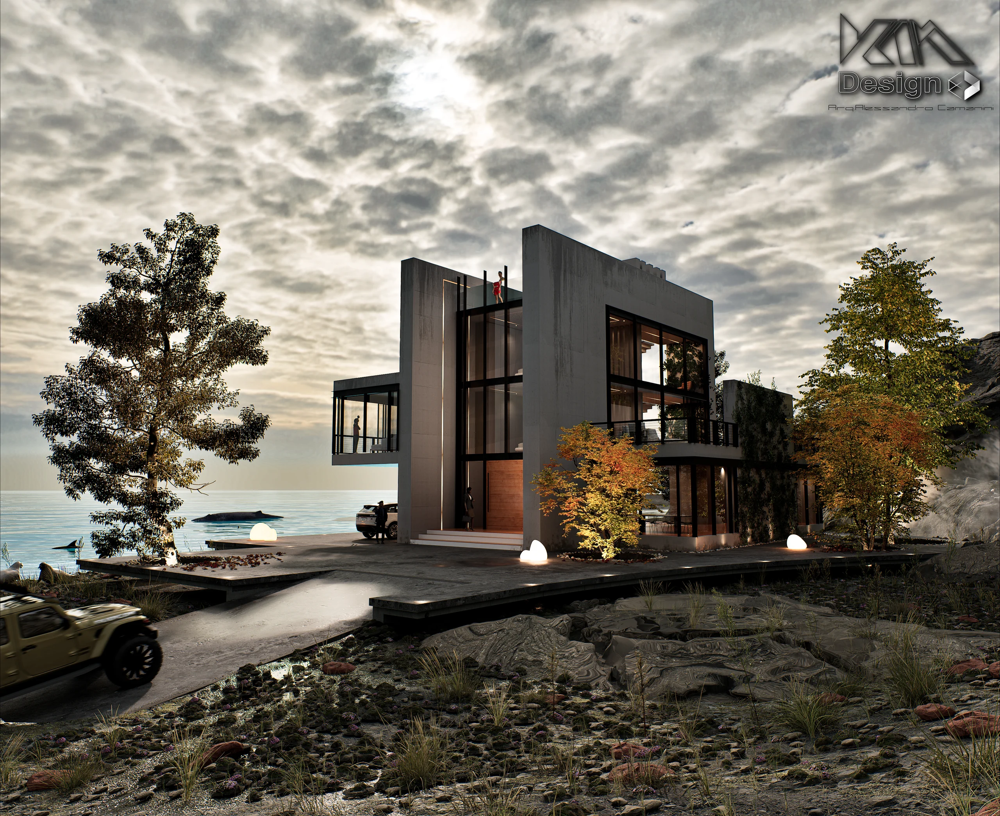
ARQUITECTURA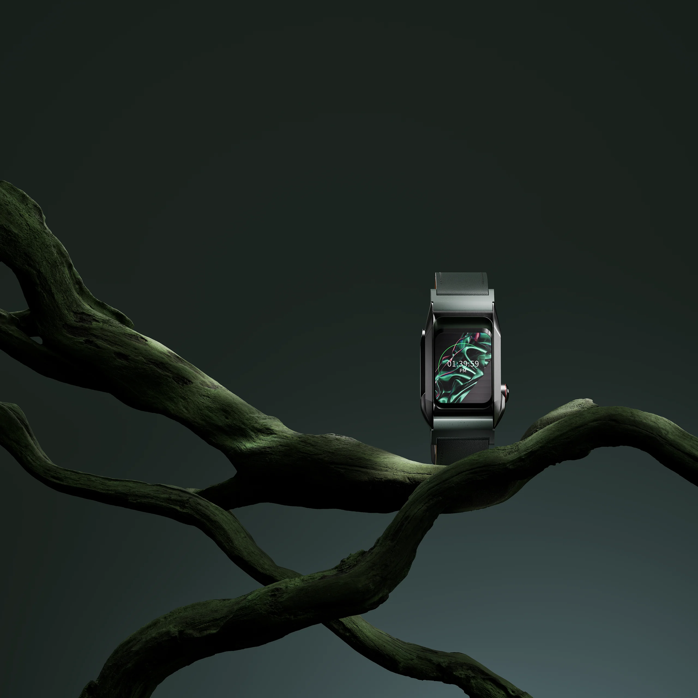
PRODUCTO 3D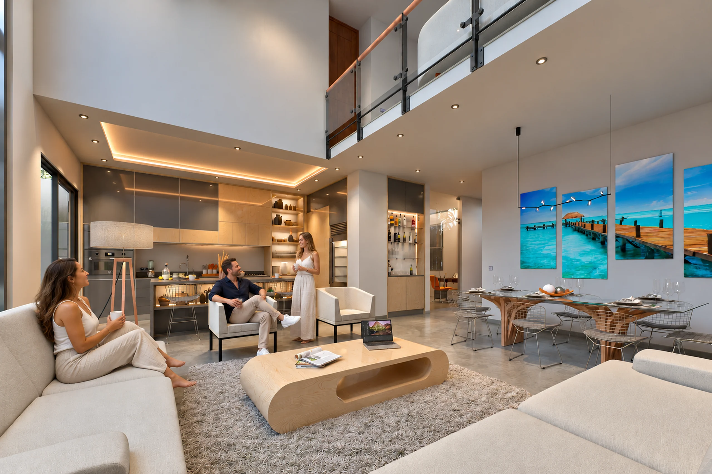
INTERIORES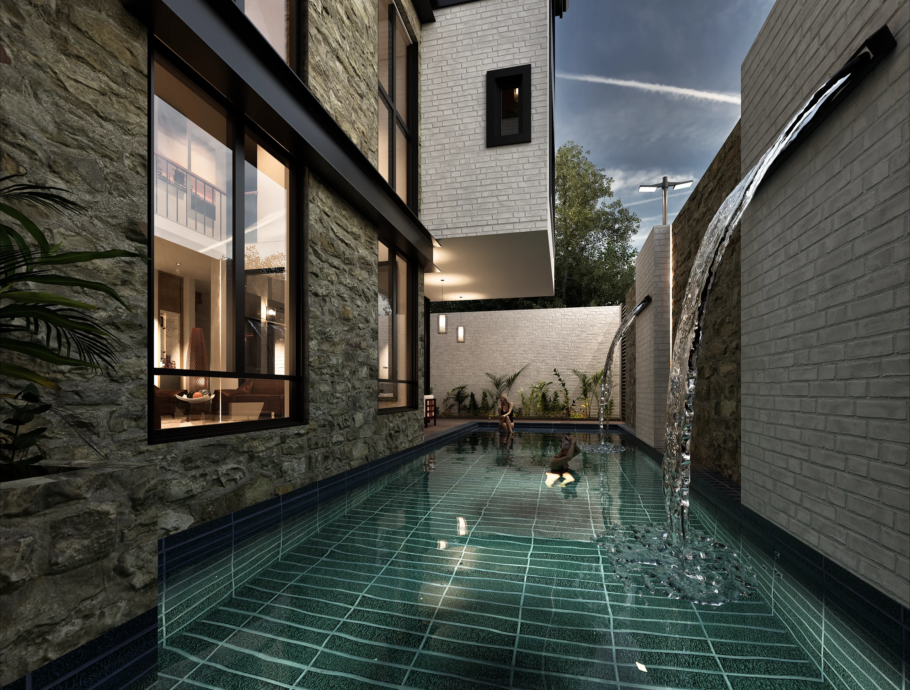
ANIMACIÓN
04 / KAM DIGITAL
Experiencias digitales
Experiencias digitales
para un mundo real.
Extendemos nuestra visión al mundo digital. KAM Digital crea sitios web, experiencias interactivas y estrategias de marketing que conectan arquitectura, marcas y personas.
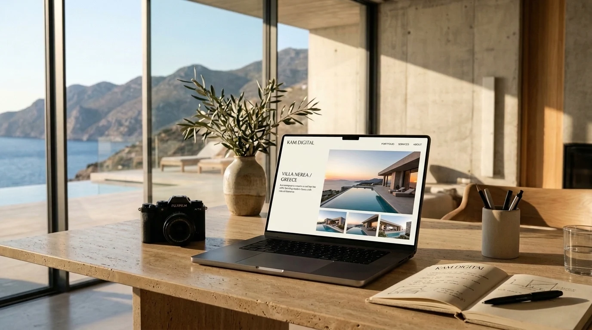
ARQUITECTURA DIGITAL · UI/UX
Diseño web
Sitios a la medida de tu marca.
Landing pages
Convierte ideas en oportunidades.
Experiencias interactivas
Tecnología que genera conexión.
Marketing digital
Estrategias que amplifican tu visión.
05 / CÓMO TRABAJAMOS
De la primera idea
De la primera idea
al último detalle.
Un método claro, predecible y colaborativo para que cada decisión acerque el proyecto a su versión más impactante y comercialmente efectiva.
CLARIDAD · RITMO · CONTROL
01 —
Escuchamos
Analizamos los planos, objetivos comerciales, público meta y el estilo estético deseado para definir el alcance exacto.
02 —
Modelamos
Construimos la volumetría tridimensional con precisión milimétrica y definimos los ángulos de cámara más favorecedores.
03 —
Visualizamos
Configuramos materiales realistas (madera, piedra, cristal), iluminación solar o artificial y vegetación endémica.
04 —
Perfeccionamos
Afinamos detalles en postproducción, ajustamos contrastes cinematográficos y entregamos en resoluciones listas para comercializar.
06 / COMENCEMOS ALGO EXTRAORDINARIO
Tu próxima gran idea
Tu próxima gran idea
merece cobrar vida.
Cuéntanos sobre tu desarrollo o proyecto arquitectónico. Te asesoramos para encontrar la solución visual más efectiva para tu presupuesto y tiempos de entrega.